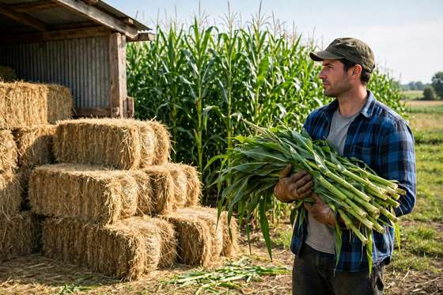
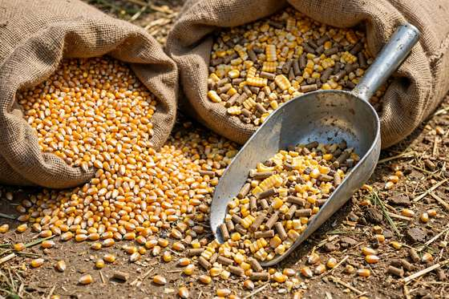
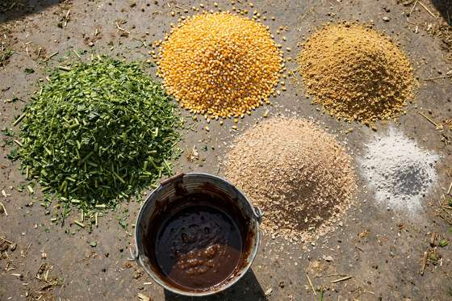
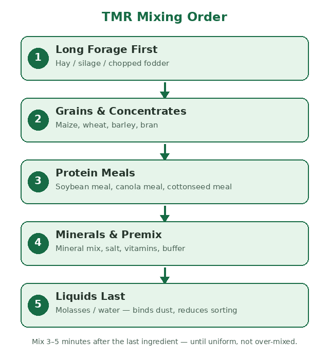
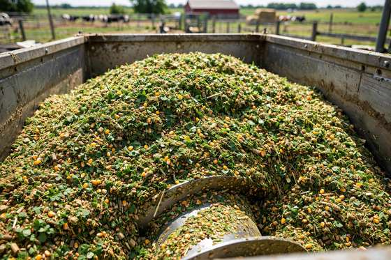
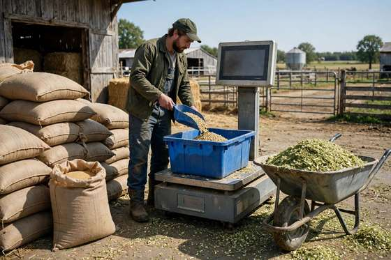
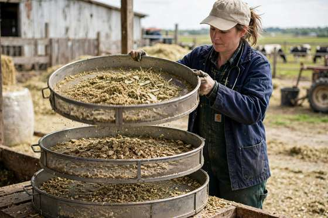
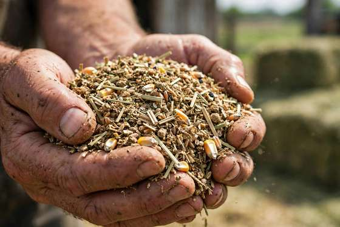
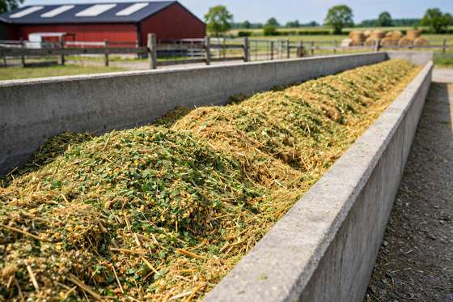
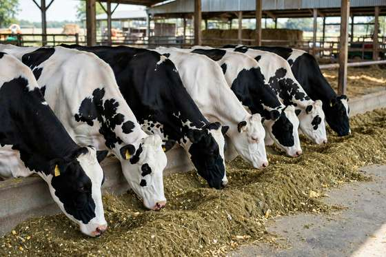

A TMR mixer wagon delivering a freshly mixed ration to the feed bunk
A total mixed ration (TMR) is a complete feed in which all ingredients — forages, concentrates, protein sources, minerals, vitamins and additives — are weighed, mixed together and offered to the cow as one uniform feed. Every mouthful contains the same balance of nutrients, so the cow cannot pick out only the tasty parts and leave the rest.
TMR feeding is the standard method on modern dairy farms around the world. It gives steady rumen fermentation, stable milk production, better feed efficiency and less feed wastage. This guide explains the benefits of TMR, the ingredients, the correct mixing order, particle size, dry matter targets, bunk management, common mistakes and a sample ration for a lactating dairy cow.
Benefits of TMR Feeding
1
Balanced nutrition in every mouthful(The cow cannot sort out the grain and leave the fibre)
2
Stable rumen fermentation(Steady fibre and energy supply keeps rumen pH stable and reduces acidosis)
3
Higher and more stable milk production(Consistent nutrient intake supports consistent milk yield and milk fat)
4
Better feed efficiency(Less wastage, better use of forages and by-products)
5
Accurate ration control(Every ingredient is weighed, so the ration can be balanced and adjusted precisely)
6
Less labour(One mixed feed is delivered instead of several separate feeds)
7
Flexible ingredient use(Wet by-products, silage and low-quality roughages can be blended in)
TMR Ingredients
A good TMR combines several ingredient groups. The exact proportions depend on the cows' milk yield, body weight and stage of lactation, and on what feeds are available locally — the ration should be balanced by a nutritionist or veterinarian.
Forages
Forages provide the fibre that keeps the rumen healthy and the cow chewing and ruminating. They usually make up about 40 to 60 percent of the ration dry matter. Common forages include maize silage, sorghum silage, green fodder such as berseem, oats, ryegrass and Napier grass, hay, and wheat or rice straw. Read our guide on silage formulation, preparation and feeding for making good-quality silage.

Forages — green fodder, hay and silage — are the fibre base of every TMR
Concentrates (energy feeds)
Concentrates supply the energy needed for milk production. Common energy feeds include ground maize, wheat, barley, sorghum grain, wheat bran, rice polish and molasses. Grains should be ground or rolled so the cow can digest the starch properly.

Concentrates — ground grains and pellets — supply energy for milk production
Protein sources
Protein feeds supply the amino acids needed for milk protein, growth and reproduction. Common sources include soybean meal, canola meal, cottonseed meal and cottonseed cake, sunflower meal, and in some regions urea as a non-protein nitrogen source — urea must only be used as advised by a veterinarian or nutritionist, because the wrong amount is dangerous.
Minerals, vitamins and additives
Every TMR needs a mineral mixture (calcium, phosphorus, salt and trace minerals) and vitamins, usually added as a premix. Common additives include buffers such as sodium bicarbonate, which help keep the rumen pH stable on high-grain rations, and yeast cultures. Additives should be used as prescribed by a veterinarian or as per the manufacturer's instructions.

All TMR ingredients — forage, grain, protein, minerals and molasses — weighed before mixing
Mixing Order and Procedure
The order in which ingredients are added to the mixer wagon matters. Adding them in the wrong order gives an uneven mix and more sorting at the bunk.
1
Long forage first(Hay, silage or chopped fodder — let it chop and blend before adding anything else)
2
Grains and concentrates(Ground maize, wheat, barley, bran)
3
Protein meals(Soybean meal, canola meal, cottonseed meal)
4
Minerals and premix(Mineral mixture, salt, vitamins, buffer — spread evenly over the mix)
5
Liquids last(Molasses or water — binds fine particles, reduces dust and sorting)

The TMR mixing order — long forage first, liquids last
Mixing time: after the last ingredient is added, mix for about 3 to 5 minutes until the ration looks uniform. Over-mixing breaks down the fibre, makes fine particles fall to the bottom, and increases sorting. Under-mixing leaves pockets of single ingredients. Always weigh every ingredient — never guess quantities by volume.

A freshly mixed TMR — forage and grain evenly blended

Weigh every ingredient — accurate weighing is the base of accurate rationing
Particle Size and the Penn State Particle Separator
Particle size decides how much the cow chews, how well the rumen works, and how much she sorts the feed. Forage chopped too long is easy to sort; forage chopped too fine does not stimulate chewing and rumination, which can lead to acidosis and low milk fat.
The Penn State Particle Separator (PSPS) is a simple tool for checking particle size: a sample of TMR is shaken through a set of stacked sieves, and the feed left on each sieve is weighed. The widely used Penn State Extension targets for a lactating-cow TMR are:
Sieve
Opening
Target share of TMR (as fed)
Upper sieve
19 mm
2–8%
Middle sieve
8 mm
30–50%
Lower sieve
4 mm
30–50%
Bottom pan
less than 4 mm
less than 20%
Check the TMR with the separator regularly — especially when the forage source changes — and also check the feed left over in the bunk. If the leftover feed contains mostly long forage, the cows are sorting, and the chop length or mixing needs attention.

Testing TMR with the Penn State Particle Separator

Check the mix by hand — it should look and feel uniform
Dry Matter Targets and Moisture Management
A TMR for lactating dairy cows is usually formulated at about 45 to 55 percent dry matter. Moisture matters because cows eat to meet their dry matter needs:
Too wet (below about 40% dry matter): the cow's rumen fills with water, so dry matter intake and milk production fall.
Too dry (above about 60% dry matter): sorting and dust increase, and intake can fall.
Wet weather: rain soaks forages and changes the moisture of the whole ration. Weigh wet ingredients on a dry-matter basis and adjust the recipe — never feed the same as-fed weights when the forage is wet.
Check dry matter regularly with a microwave test or a moisture tester, and recalculate the ration whenever a new batch of silage or forage is opened. Rations are always balanced on a dry-matter basis, then converted to as-fed weights for the mixer.
Even a perfectly formulated TMR fails without good bunk management. Follow these daily practices:
1
Feed at least twice a day(Fresh feed keeps cows eating and reduces heating and spoilage)
2
Push feed up several times a day(Cows push feed away as they eat — push it back within reach)
3
Keep feed available most of the day(The bunk should be almost empty — about 2–5% left over — before the next feeding)
4
Give enough bunk space(Every cow should be able to eat at the same time; crowding causes sorting and bullying)
5
Clean drinking water at all times(A lactating cow drinks a large volume of water daily — water intake drives feed intake)
6
Remove stale or heated feed(Never let old feed build up in the bunk — it spoils the fresh feed)
7
Introduce ration changes gradually(Change rations over 7–10 days so the rumen microbes can adjust)

Fresh TMR evenly spread along the bunk

Healthy cows eating TMR — every cow should reach the bunk
Common Mistakes in TMR Feeding
Mistake
Result
What to do instead
Not weighing ingredients
Unbalanced ration, variable milk yield
Weigh every ingredient, every load
Over-mixing
Fine particles, less chewing, acidosis
Mix 3–5 minutes after the last ingredient
Forage chopped too long
Sorting — cows eat grain, leave fibre
Chop to the recommended length; check with the separator
Ignoring moisture changes
Wrong dry matter intake after rain or a new silo
Test dry matter regularly; adjust as-fed weights
Feeding once a day
Heating, spoilage, uneven intake
Feed at least twice daily; push feed up often
Sudden ration changes
Digestive upset, low intake, acidosis
Change rations gradually over 7–10 days
Feeding mouldy silage or feed
Mycotoxins, low intake, illness
Discard spoiled feed — never feed it
Sample TMR Ration (Example Only)
The table below is an EXAMPLE TMR for one lactating dairy cow producing around 20 kg of milk per day. It shows the structure of a balanced ration — it is not a prescription for any particular herd. Rations must be balanced by a nutritionist or veterinarian for the specific herd, using local feed analysis, milk yield, body weight and stage of lactation.
Ingredient
As-fed (kg/cow/day)
Role in the ration
Maize silage
20
Energy + fibre (main forage)
Green fodder (berseem / oats)
10
Fibre + protein
Wheat straw
2
Long fibre for rumination
Ground maize grain
4
Energy (starch)
Wheat bran
1.5
Energy + fibre
Soybean meal / canola meal
1.5
Protein
Cottonseed cake
1
Protein + energy
Molasses
0.5
Energy + binds the mix
Mineral mixture
0.1
Calcium, phosphorus, trace minerals
Common salt
0.05
Sodium + chloride
Total (approx.)
about 40 kg as-fed
about 19–21 kg dry matter
Important: this is an example only. Actual amounts depend on the feed analysis, the cow's milk yield and body weight, and local feed availability. Always have the ration balanced by a qualified nutritionist or veterinarian, and introduce any new ration gradually over 7–10 days.
Troubleshooting TMR Problems
Problem
Likely cause
Action
Cows sorting the feed
Forage too long, ration too dry, over-mixing
Shorten chop length; add molasses or water; check with the separator
Low milk fat
Not enough effective fibre; acidosis
Check particle size and fibre level; consult a veterinarian
Feed heating in the bunk
Feed left too long; warm weather
Feed smaller amounts more often; clean the bunk daily
Variable milk yield
Inconsistent mixing or weighing
Weigh every load; follow the same mixing order and time
Low feed intake
Wet ration, spoiled feed, heat stress, illness
Check dry matter and feed quality; check water supply; examine sick cows
Loose dung / acidosis signs
Too much grain, too little fibre, sudden change
Review the ration with a veterinarian; change rations gradually
Digestive problems such as acidosis and ketosis are closely linked to feeding. See our guides on ketosis in cattle and the cattle diseases index for more information.
Conclusion
TMR feeding gives every cow a balanced ration in every mouthful. Weigh every ingredient, add them in the correct order — long forage first, liquids last — mix until uniform without over-mixing, check particle size with the Penn State Particle Separator, manage dry matter carefully, and keep the bunk clean with fresh feed available through the day. A well-made TMR supports healthy cows, stable milk production and better farm profits. Always balance rations with a qualified nutritionist or veterinarian for your own herd.
Good feeding management is the foundation of a profitable dairy farm
References
National Research Council (NRC) – Nutrient Requirements of Dairy Cattle.
Penn State Extension – Total Mixed Rations for Dairy Cattle; Penn State Particle Separator.
University of Wisconsin–Madison Extension – Feeding and Managing Dairy Cattle.
FAO – Livestock Feed Resources and Ration Formulation.
Frequently Asked Questions
What is a total mixed ration (TMR)?
A total mixed ration (TMR) is a complete feed in which all ingredients — forages, concentrates, protein sources, minerals, vitamins and additives — are weighed, mixed together and offered as one uniform feed. Every mouthful contains the same balance of nutrients, so the cow cannot pick out only the tasty parts. TMR feeding is the standard method on modern dairy farms because it gives steady rumen fermentation, stable milk production and better feed efficiency.
Why is TMR better than feeding ingredients separately?
When ingredients are fed separately, cows eat the grain first and leave the fibre, which causes rapid acid production in the rumen and increases the risk of acidosis, laminitis and low milk fat. TMR prevents this sorting, keeps the rumen pH more stable, improves dry matter intake and feed conversion, reduces feed wastage, and allows accurate control of the ration. It also saves labour because one mixed feed is delivered instead of several separate feeds.
What is the correct mixing order for TMR?
Add long forage first (hay, silage or chopped fodder) and let it chop and blend, then add grains and concentrates, then protein meals, then the mineral and vitamin premix, and add liquids such as molasses or water last. Liquids added last help bind fine particles and reduce dust and sorting. After the last ingredient, mix for about 3 to 5 minutes until the ration is uniform — over-mixing breaks down the fibre and increases sorting.
What should the particle size of a TMR be?
Particle size is checked with the Penn State Particle Separator, a set of stacked sieves. For a lactating-cow TMR, the widely used Penn State Extension targets are about 2 to 8 percent on the upper (19 mm) sieve, 30 to 50 percent on the middle (8 mm) sieve, 30 to 50 percent on the lower (4 mm) sieve, and less than 20 percent in the bottom pan. Too many long particles increase sorting; too many fine particles reduce chewing and effective fibre, which can lead to acidosis.
What dry matter level should a TMR have?
A TMR for lactating dairy cows is usually formulated at about 45 to 55 percent dry matter. A ration that is too wet (below about 40 percent dry matter) limits intake because the cow's rumen fills with water, while a very dry ration (above about 60 percent dry matter) increases sorting and dust. Dry matter should be checked regularly, especially after rain, because wet forages change the moisture of the whole ration — adjust the recipe by weighing the wet ingredients on a dry-matter basis.
How many times a day should I feed TMR to my cows?
Feed TMR at least twice a day, and push the feed up to the cows several times a day so feed is always within reach. Fresh feed should be available for most of the day, and the bunk should be almost empty — with only about 2 to 5 percent left over — before the next feeding. Always give clean drinking water at all times, and remove stale or heated feed from the bunk before adding fresh feed.
My cows pick out the grain and leave the hay — what should I do?
This is called sorting, and it is very common. First, check the chop length — long forage pieces are easy to sort, so chop forage to the recommended length. Add molasses or a little water to bind the fine particles to the forage. Do not over-mix, because over-mixing makes fine particles fall to the bottom. Feed more often, push feed up regularly, and make sure there is enough bunk space so every cow can eat at the same time. If sorting continues, check the ration with the Penn State Particle Separator.
ٹی ایم آر کیا ہے اور یہ دودھ دینے والی گائیوں کے لیے کیوں ضروری ہے؟
ٹی ایم آر یعنی ٹوٹل مکسڈ راشن ایک مکمل خوراک ہے جس میں چارہ، دانہ، پروٹین، معدنیات اور وٹامن سب کو تول کر ایک ساتھ ملا دیا جاتا ہے تاکہ گائے ہر نوالے میں متوازن خوراک کھائے۔ اس سے گائے صرف دانہ چن کر نہیں کھا سکتی، معدہ صحت مند رہتا ہے، دودھ کی پیداوار مستحکم رہتی ہے اور خوراک ضائع نہیں ہوتی۔ ٹی ایم آر کو صحیح ترتیب سے ملائیں، نمی کا خیال رکھیں اور تازہ خوراک دن میں کم از کم دو بار دیں۔
Key Takeaway
TMR is one balanced feed for every cow: weigh every ingredient, add long forage first and liquids last, mix 3–5 minutes until uniform, check particle size with the Penn State Particle Separator, keep dry matter around 45–55%, and feed fresh TMR at least twice a day with feed pushed up regularly. Balance every ration with a nutritionist or veterinarian for your own herd. Follow current local veterinary authority guidance and feed supplier instructions.